A Donation Flow Built for the Phone in Your Hand.
Big Cat Rescue runs on the generosity of people who will never set foot on the property, and most of those people found the old site on a phone, not at a desk. That old site wasn't built with that in mind, donation options buried, text too small to read at arm's length, a layout that looked worn enough to make the organization seem shut down. We chose this project ourselves, decided early that the phone experience was the actual product, and spent the weeks after learning that agreement is harder to reach than any one good idea.
Scroll to begin ↓"A donor doesn't see the sanctuary. They see it on their phone, mid-scroll, and decide right there whether the place is real."
The Problem
This project started with a choice, not a brief. As a four-person team in a UI/UX bootcamp, we picked our own organization to redesign, so the first real decision was who to build this for.
We landed on Big Cat Rescue, a sanctuary for tigers, lions, and other big cats. Their site worked against its own goal: the donation flow was buried, the structure didn't match how a visitor thinks about a non-profit, and the visual design looked dated enough to undercut its own credibility. For an organization that depends on donor trust, that isn't a cosmetic problem, it's the whole funnel.
We opened the old site on our own phones before touching Figma, and that settled the priority. Text ran too small without zooming, the donate button sat several screens down, and the layout had been built for desktop then left to shrink. Most donors were going to find this link on a phone, not a computer. We treated the mobile experience as the actual product, not a later adjustment.
Research & Discovery
We ran user interviews and a short survey with people who'd donated to causes like this before, to understand what moves someone from "I care about this" to "I gave money." The sample was small, this was a bootcamp project on a bootcamp timeline, but the pattern across answers was consistent enough to act on.
What we heard, not a validated studyThe most useful finding wasn't any single number, it was "100% say transparency is very important" sitting next to a donation flow that gave almost no information about where money went. That gap became the thesis for the whole redesign: a site that's honest about itself reads as more trustworthy than one that just looks polished. Payment habits and update preferences also matched how people use their phones, checking in occasionally rather than logging into a dashboard, so the mobile screen had to carry that thesis, not just mirror a desktop page.
What We Were Working Against
Before redesigning anything, we audited the existing Big Cat Rescue site as a team, on our own phones, and wrote down every friction point we could agree on without much debate. This list ended up being the one part of the project where all four of us were aligned from the start:
- Too many pages, with no clear hierarchy between them
- Limited options for donating, both in payment method and frequency
- Confusing site architecture that didn't match how a visitor thinks
- Inconsistent typography across pages, and too small to read comfortably on a phone screen
- A visual style that looked expired, which made it harder to trust
- Tap targets sized for a mouse pointer, not a thumb
- Information overload on pages that needed to make a fast case for donating
Define & Ideate
With four designers and no client to break ties, most decisions went through the same loop: someone proposes a direction, someone pushes back with a real reason, the team resolves it instead of letting whoever's loudest win. Two of those moments shaped the final design more than any single screen did.
Lean into the "exotic animal sanctuary" angle hard, big imagery, dramatic color, an interface that feels like an adventure. That's what makes people stop scrolling.
If it feels too much like entertainment, it undercuts the credibility a donor needs to feel before giving money to a non-profit they've never heard of.
Keep the vibrant, photographic, slightly wild visual identity that makes the animals feel real and present, but pair it with a calmer, more conventional layout structure underneath, so the page still reads as organized and trustworthy, not flashy.
Surface every animal type, every program, every way to help, right on the homepage. More options means more ways for a visitor to find something that resonates.
That's the exact information-overload problem we just flagged on the old site. A first-time visitor doesn't need every option, they need one clear next step.
A simplified site map: Home, Get Involved, Cub Facts, and Donate as the four top-level destinations, with deeper content, animal types, volunteer paths, cat laws, nested one level in instead of competing for space up front.
Neither resolution was any one person's idea by the end. The real skill wasn't generating ideas, it was running enough rounds of "what are we both actually optimizing for" until disagreement turned into a sharper design instead of a stalemate.
One decision skipped the debate entirely: design the phone screens first, treat desktop as a later pass, since that's where a donor was actually going to encounter this site. Every wireframe and every round of testing happened on mobile from the start.
Design Decisions
One phone screen, two directions
The first pass was fast, dark, and stripped down, just enough structure to react to. The final version keeps that bone structure but adds warmth, and somewhere to go after the hero.
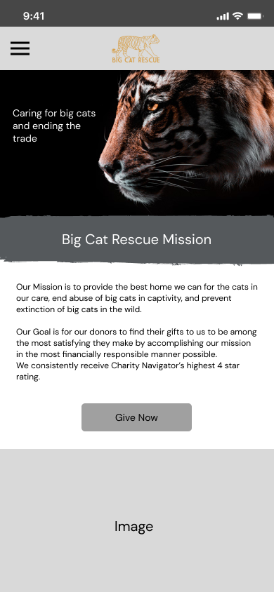
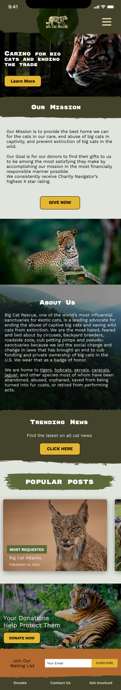
Left, the early structural pass. Right, the final page, with trending news, popular posts, and a donate banner added so a visitor has somewhere to go next.
A donation flow built around how people give, on a phone
Research pointed straight at card payment and one-time gifts over monthly ones, so the flow is built around that reality instead of assumption.
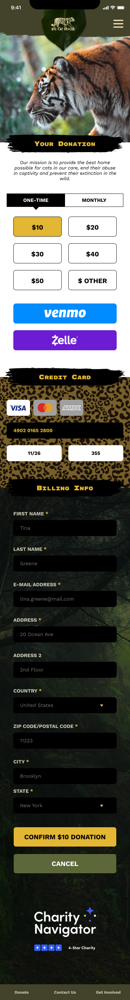
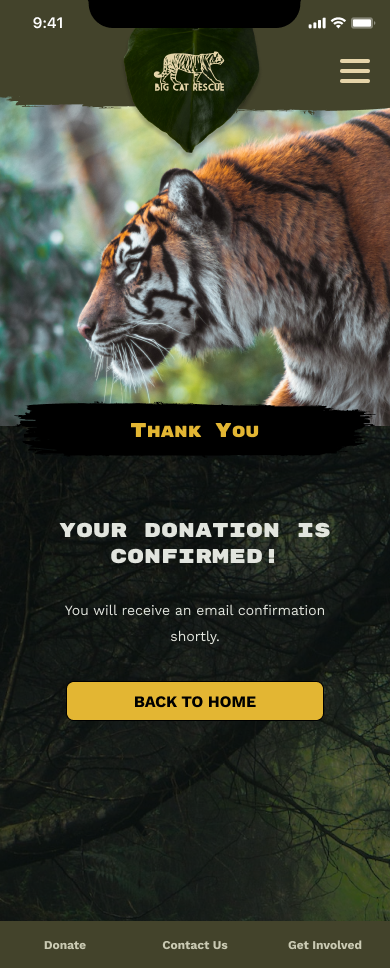
One-time and monthly sit as equal toggles. Venmo and Zelle sit above the card form for anyone avoiding a card number on a phone keyboard. A confirmation screen closes the loop.
Get Involved, without the maze
The old site spread this content across separate pages with no shared layout, a lot of tapping back and forth on a phone. We collapsed it into tabs on one page instead.
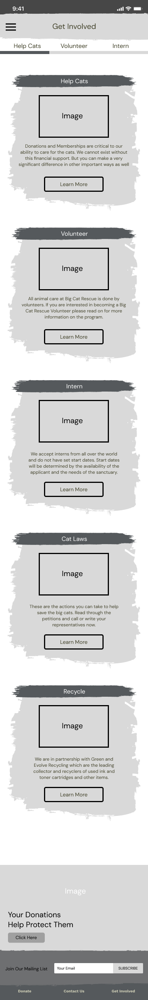
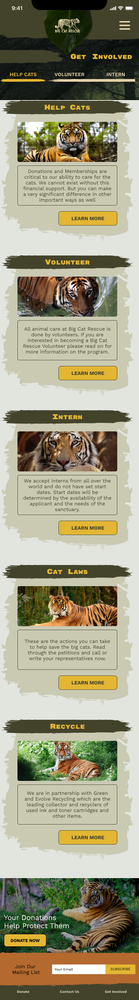
Help Cats, Volunteer, and Intern sit as tabs, each with a photo and one button. Cat Laws and Recycle stay further down the same page.
A wheel instead of a list
Cub Facts was the one page where we debated the interaction itself, not just the visual style. A plain list of species felt flat for content this visual, so we built a wheel instead.
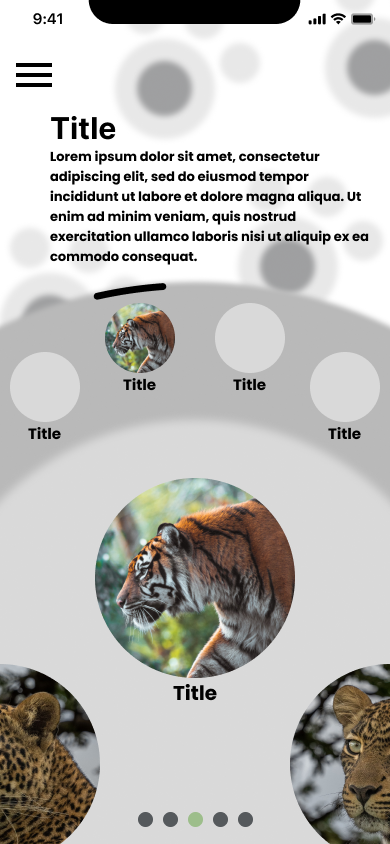
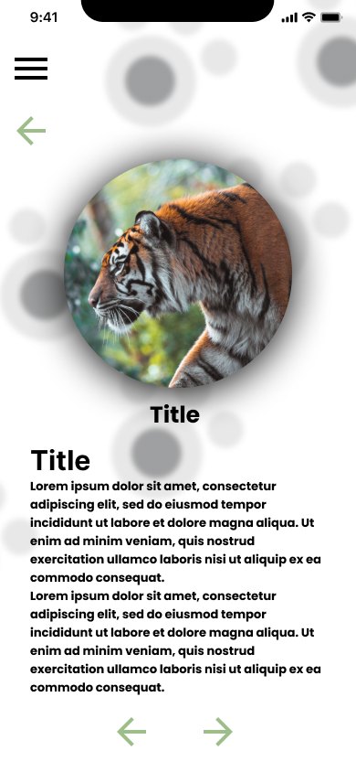
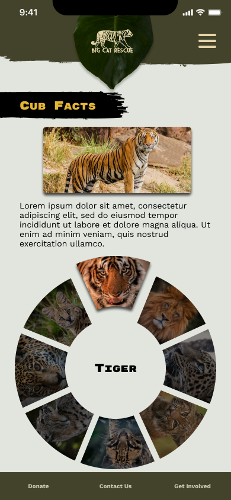
Lo-fi wireframes worked out the wheel and a tap-through detail screen with back and forward arrows. The final wheel swaps its center label as you spin through tiger, leopard, jaguar, and the rest.
Navigation you can run with your thumb
With more content moved a level in, the hamburger menu had to carry more weight than it would on a simpler site.
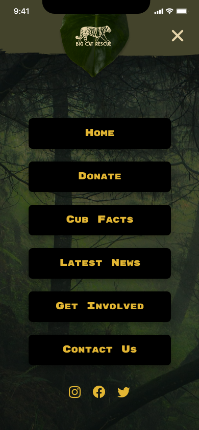
Large, evenly spaced tap targets sit over a dimmed hero photo instead of a plain sheet, so the menu still feels like the same site while it's open.
A real brand system, not just a homepage
Because we were redesigning an existing organization rather than inventing one, we built a full style system, checked against how it held up at phone type sizes.
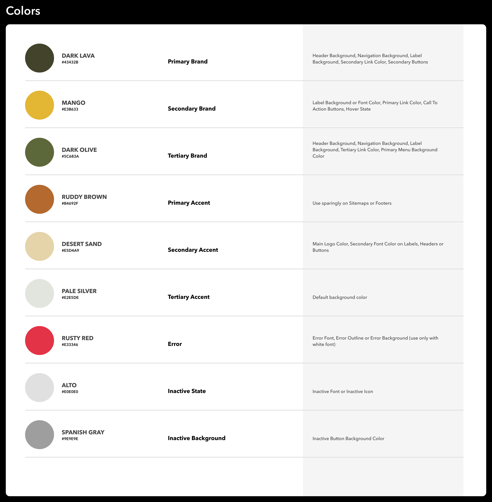
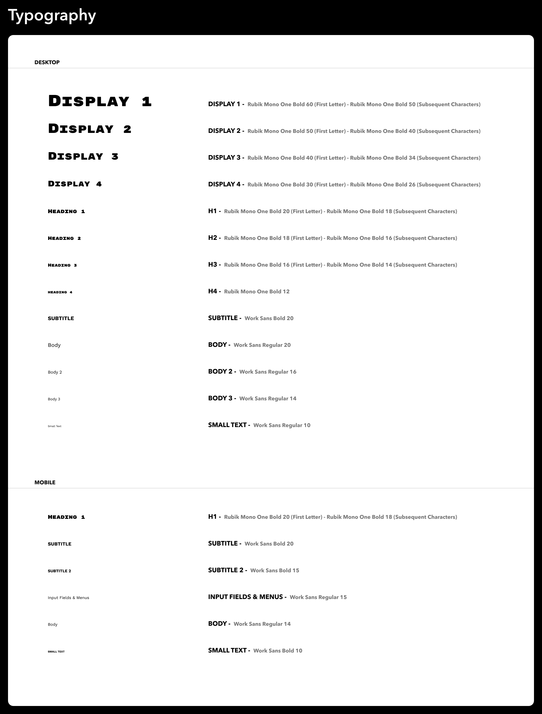
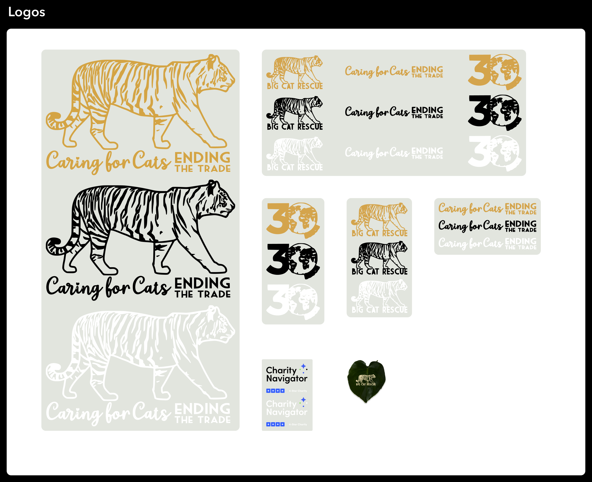
Olive and mango, Rubik Mono One for headlines, Work Sans for body copy legible at small sizes. The same system holds together across four different pages.
Putting It in Front of People
We ran usability tests on the hi-fi prototype, handed to testers on their own phones rather than resized in a desktop browser, before calling it finished. The findings were specific enough to act on directly rather than vague "users were confused" notes:
- Certain interactive elements didn't stand out enough to register as clickable
- Visitors wanted a clearer overview of what each page contained
- The logo didn't navigate back to the homepage, a default people expected without thinking about it
- A couple of testers didn't realize the Cub Facts wheel could be spun until they were told, so we added a subtle motion cue on first load
- The donate form needed a cancel option
- Vertical padding on the donate page felt excessive and made the one-handed scroll feel longer than it was
- Testers wanted transparency stats surfaced directly on the donate page itself, not just elsewhere on the site
That last finding closed the loop on the research: the same group that said transparency mattered most also said, independently, that they wanted to see it at the moment they were about to give money. We took that as confirmation we'd built the right priority into the page.
Where This Landed
This redesign never shipped, so there's no donation or traffic data here. What exists is a complete Figma prototype built mobile screens first: full site map, lo-fi through hi-fi phone layouts, a working style system, and usability testing on real phones that fed changes back into the design. What follows is the process and what I'd change, not a deployed result.
By the time we wrapped the project, Big Cat Rescue had unfortunately shut down due to financial struggles. The redesign was never going to be handed off at that point, which is its own quiet reminder that even a well-reasoned design only matters if the organization behind it survives long enough to use it.
What I'd do differently: push earlier for a larger, more structured research sample instead of leaning on a small informal survey, and design the desktop layout alongside the mobile one instead of leaving it as a later pass we never fully got to. The compromises we landed on were good ones, but we got there more by persistence than by a process built to make that easier.